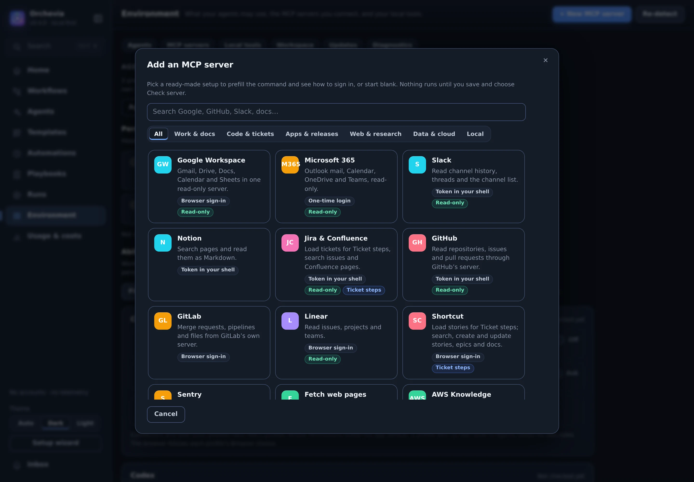
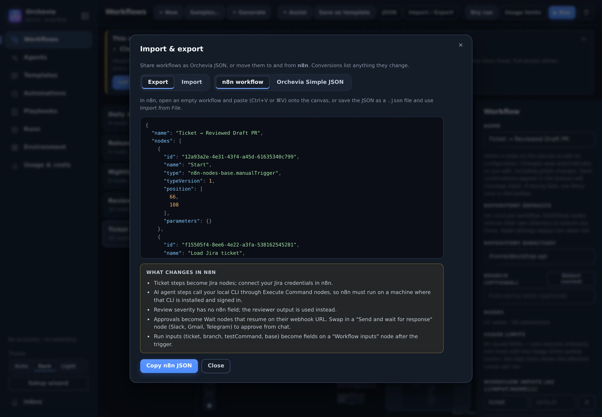
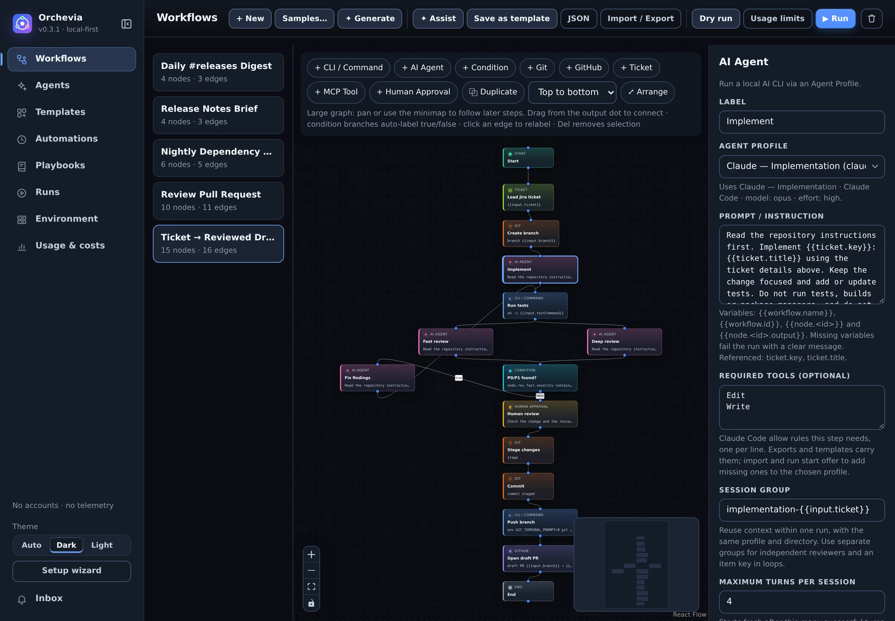
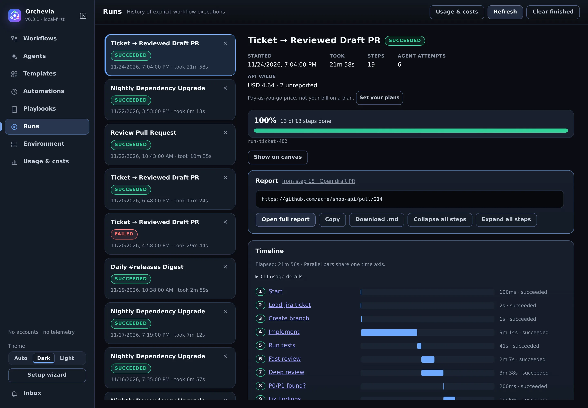
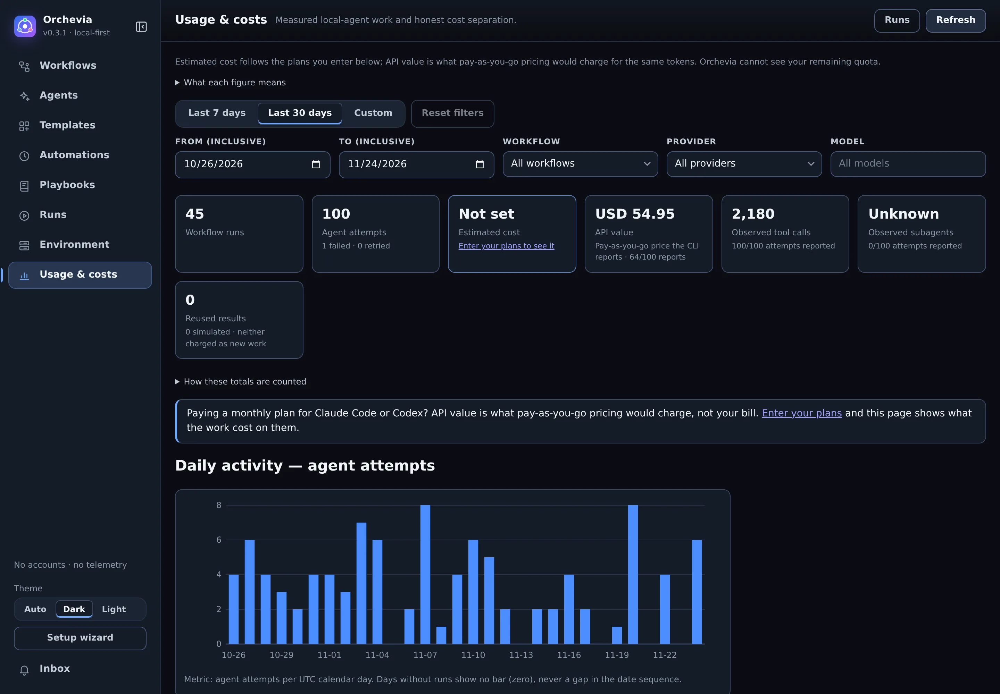
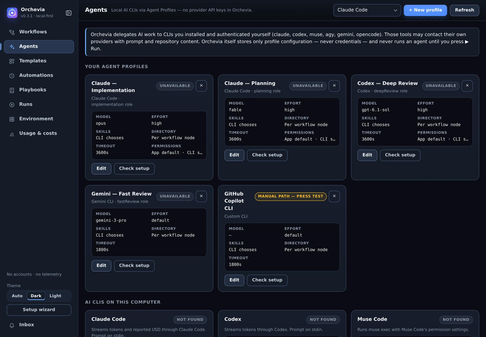
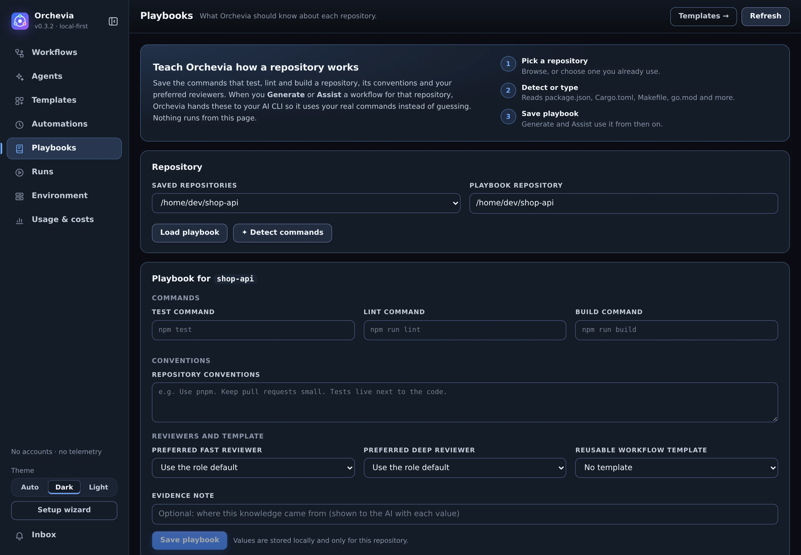
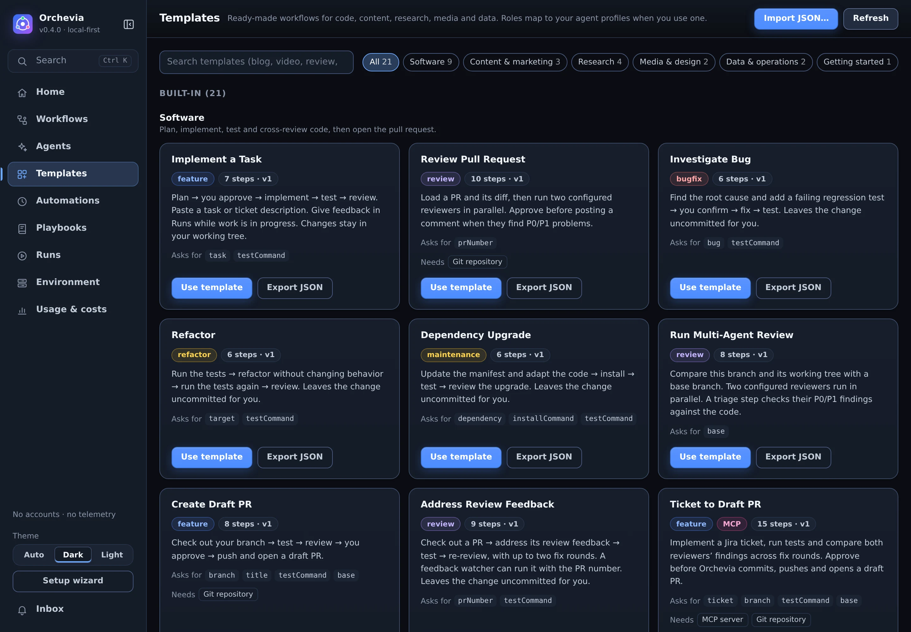
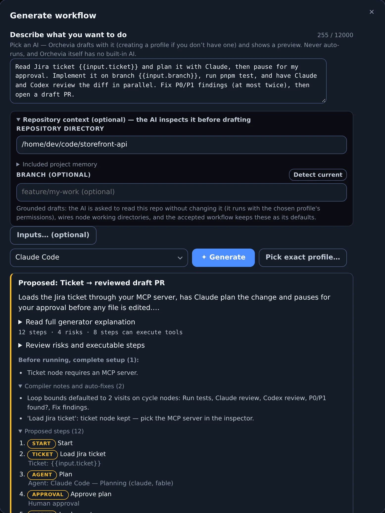

Orchevia runs Claude Code, Codex, Gemini CLI, Copilot CLI and other agents as
a visual workflow on your machine. Plan, approve, test, cross-review and open
the PR, with your Jira, Slack, Google and GitHub tools wired in.
A replay of real runs, in your browser. Pick a scenario and press Run. The
ticket run pauses for your approval, sends two reviewers in parallel,
loops once on a P1 finding and opens a draft PR.
Ready
Turn on JavaScript to replay the run. The screenshots below show the
same workflow in the app.
Press ▶ Run demo to start.
Simulated in your browser: nothing is installed or sent anywhere. In the
app, each step runs your real CLI or MCP server and keeps its full output.
New in 0.3.1
Bring the tools you use. Take your workflows anywhere.
This release connects Orchevia to far more of your stack, moves workflows to
and from n8n, and makes every screen calmer and clearer.
New
22 MCP setups inside the server form
Pick Google Workspace (Gmail, Drive, Docs, Calendar and Sheets in one
server), Microsoft 365, Slack, Notion, Jira, GitHub, Sentry, Linear and
more. Each setup shows how to sign in, which variables to export, checks
that Orchevia can see them, and lists the tools you can call.

New
n8n import & export
Export any workflow as n8n JSON and paste it onto an n8n canvas, or import
an n8n workflow as a new Orchevia workflow. Every conversion lists what
changed.
AI agent⇄executeCommand
Condition⇄if
Approval⇄wait
Ticket⇄jira
Command⇄executeCommand
Playbooks that fill themselves
Detect commands reads package.json, Cargo.toml, Makefile, go.mod,
pyproject.toml and more, so generated workflows use your real test, lint
and build commands.
More coding CLIs, one click
GitHub Copilot CLI, Cursor CLI, Qwen Code, Amp, Aider, Goose and Kiro CLI
join Claude Code, Codex, Gemini CLI, Antigravity, OpenCode and Muse Code.
A JSON editor that explains errors
Colors, line numbers, Format, and the exact line and column of the first
mistake, in plain words, wherever you edit or paste JSON.
MCP templates
Summarize a Web Page, Answer from AWS Docs and Slack Channel Digest call
an MCP tool and hand the result to your planning agent as data. No
repository needed.
A calmer, sharper app
New icons, switches, cards and dialogs, a full-width run progress bar
split by step status, and a grouped toolbar that fits on one row.
Why Orchevia
Built for real repositories, not demos
Everything that makes agent work safe to hand off: explicit runs, people in
the loop, bounded loops and a local record of what happened.
Visual, explicit workflows
Commands, AI agents, Git, GitHub, tickets, MCP tools, conditions and
approvals on one canvas. Nothing runs until you press Run.
People stay in charge
Approval steps pause the run. Send feedback to a step while the run is
going; it is checked before anything is published.
Cross-review with rounds
Two reviewers in parallel, a P0/P1 gate and a bounded fix loop. Runs show
which findings were fixed, stayed open or came back.
Automations
Schedules and Git watchers start workflows on time or on new commits, with
missed-run policies and an Inbox for results.
Usage & costs
Tokens and the API value your CLIs report, per day, workflow and model,
plus what the work cost on your monthly plans.
Generate or assist
Describe a goal and your own CLI drafts a workflow you preview before it
exists. Assist rearranges or improves an existing one.
MCP connections
22 ready-made MCP setups, credentials never stored
Environment → + New MCP server opens a searchable picker.
Each setup fills in the command, explains the sign-in, writes the
export lines for your shell and checks that Orchevia can see
them. Values never enter Orchevia.
Work & docs
GWGoogle WorkspaceGmail · Drive · Docs
M365Microsoft 365Outlook · Teams
SSlackread-only
NNotionpages
Code & tickets
JCJira &
ConfluenceTicket steps
GHGitHubrepos · PRs
GLGitLabbrowser sign-in
LLinearread-only
SSentryissues
Web & research
FFetch web pagesno account
AWSAWS Knowledgeno account
C7Context7library docs
BSBrave Searchweb search
CFCloudflare Docsno account
PWPlaywrightbrowser
Data, cloud & local
SSupabaseread-only SQL
PGPostgreSQLrestricted
SStripehosted server
FFilesystem · Git ·
Memorylocal
FFigmadesktop app
n8n import & export
Use n8n for SaaS glue. Use Orchevia for code.
n8n is great at connecting hundreds of web services. Orchevia is built for
coding agents working in your repositories. Now a workflow can move
between them in either direction.
Export any workflow as n8n JSON: paste it onto an
n8n canvas or import it from a file.
Import an n8n workflow: commands, HTTP requests, If
nodes, waits, Jira and AI agent nodes become Orchevia steps.
Nothing silent: every conversion lists what changed
and what has no equivalent.

Orchevia step
n8n node
Notes
Start + run inputs
manualTrigger + set
Inputs become fields on a “Workflow inputs” node.
Command, Git, GitHub
executeCommand
The same git and gh commands, in the same
folder.
AI agent
executeCommand
Calls your local CLI (claude -p, codex exec,
…).
Condition
if
True and false outputs keep their branches.
Approval
wait
Resumes on its webhook; swap in “send and wait” to approve from chat.
Ticket
jira
Connect your Jira credentials in n8n.
Product tour
Everything a run touched, in one place
Real screens from the app. Edit on the canvas, follow each run step by step,
see what your CLIs reported and set up agents and tools.

Design on the canvas
Add steps from the toolbar, connect them, and edit each one in the
inspector: the agent profile, prompt, handoffs, retries, timeouts and
the tools it may use. Changes save as you go.

Follow every step
A full-width progress bar, a timeline on one time axis, readable step
summaries, review rounds and the final report, all stored locally with
the exact graph that ran.

Know what the work cost
Tokens and the API value each CLI reports, per day, workflow, profile
and model. Enter your monthly plans to see what the work cost on them.

Your CLIs, your sign-in
Profiles pick a CLI, model, effort and permissions for each role.
Missing CLIs show their install command; seven more CLIs set up in one
click.

Teach it each repository
Save test, lint and build commands, conventions and reviewer choices per
repository. Generate and Assist use them instead of guessing.

Start from a template
Thirteen starters that run as shipped, each replayed end to end in the
test suite. Save your own and share them as JSON or n8n.
Templates
Start with a workflow you already do
Use a template, choose the repository and the MCP server it needs, and run it.
Every template asks for what it needs when it runs.
Getting started
First Workflow
Commands, Runs and an approval, with no repository or agent.
Feature
Implement a Task
Plan, approve, implement, test and review.
Feature · MCP
Ticket to Draft PR
Load a Jira ticket, implement, cross-review with fix rounds and open a
draft PR.
Review
Review Pull Request
Two reviewers in parallel; you approve before a comment is posted.
Review
Address Review Feedback
Fix PR feedback with up to two rounds; a watcher can run it.
Review
Run Multi-Agent Review
Compare a branch with its base using two reviewers and a triage step.
Bug fix
Investigate Bug
Find the cause and add a failing test before the fix.
Refactor
Refactor
Change structure without changing behavior, with tests around it.
Maintenance
Dependency Upgrade
Upgrade, install, test and review the change.
Feature
Create Draft PR
Test, review, approve, push and open a draft PR.
New · MCP
Summarize a Web Page
Fetch a page and get key points, decisions and action items.
New · MCP
Answer from AWS Docs
Search current AWS documentation and get a cited answer.
New · MCP
Slack Channel Digest
Turn a channel into decisions, questions and action items.

Workflow generator
Describe the task. Get a graph you can check.
Your own CLI drafts the workflow from a goal, grounded in your repository
and its playbook. Orchevia compiles and validates it, lists the risky
steps, and shows a preview. Nothing runs until you accept and press Run.
Uses your playbook: real test and build commands,
not guesses.
Safe by construction: no invented tools, credentials
or unbounded loops.
Assist rearranges or improves an existing workflow,
for review before Apply.
Authoring
A graph for inspection. JSON for reuse.
Every workflow is plain JSON you can read, diff and share. Switch between
Simple JSON (readable keys) and Advanced JSON (the full definition) in the
editor, which colors it and points at the line of any mistake.
Templates export as portable JSON with roles, never secrets.
Import from Orchevia JSON, a template or an n8n workflow.
Run inputs, handoffs and loop bounds live in the file.
Other Linux:sudo apt install ./Orchevia-linux-x86_64.deb, or
chmod +x the AppImage and run it.
macOS first launch
Builds are not notarized yet, so macOS blocks the first launch with a
warning that it cannot verify Orchevia. Close the warning, then choose
Open Anyway in System Settings → Privacy & Security (System
Preferences → Security & Privacy on macOS 12 and earlier), or run:
Save
SHA256SUMS
next to the installer, keep the file names, and look for OK:
# Linux
sha256sum -c SHA256SUMS --ignore-missing
# macOS
shasum -a 256 -c SHA256SUMS --ignore-missing
Build from source
Contributors can build from source with Node.js 24+, pnpm 10+, Rust stable
and the platform dependencies in
the development guide. pnpm dev opens a browser preview with a mock backend;
pnpm tauri dev runs real workflows in the desktop app.
git clone https://github.com/iazaran/orchevia.git
cd orchevia
pnpm install
pnpm tauri dev
FAQ
Before you start
Do I need an Orchevia account or a model API key?
No. First Workflow runs with local commands. For AI steps, sign in through
each CLI the way its provider expects. Orchevia has no account or model API
key field.
Which agents and MCP servers work?
Built in: Claude Code, Codex, Gemini CLI, Google Antigravity CLI, OpenCode
and Muse Code. One click through the Custom CLI adapter: GitHub Copilot CLI,
Cursor CLI, Qwen Code, Amp, Aider, Goose and Kiro CLI. Any local (stdio) MCP
server works; 22 have ready-made setups, and remote servers connect through
mcp-remote.
How does Orchevia compare with n8n?
n8n automates web services with hundreds of integrations and a hosted or
self-hosted server. Orchevia is a desktop app for coding agents in your
repositories: approvals, review rounds, loops, Git and pull requests, with
no server. Use both: export a workflow to n8n or import one from it.
What does it cost?
Orchevia is free and open source (Apache-2.0). Your AI CLIs are billed by
their providers as usual. Runs show the tokens and the API value a CLI
reports; enter your monthly plans in Usage & costs to see what the work
cost on them.
Does local-first mean everything stays offline?
Workflows and run history live in local SQLite, and Orchevia has no
telemetry or hosted worker. Orchevia itself only asks GitHub for its latest
release, and you can turn that off. Your AI CLIs, GitHub operations and MCP
servers may contact their own services.
What happens when a step fails or I cancel?
Inspect per-step errors and partial output in Runs. Workflows can define
retries and failure paths. Cancelling stops the active step and its process
group; it does not undo earlier file edits, commits or remote writes.
Will schedules run with the app closed?
Schedules and watchers need the app running. Background mode keeps it
running when the window closes; there is no cloud worker.
Which platforms are supported?
Linux x86_64 and macOS on Apple Silicon and Intel. Windows is not supported
yet. macOS installers are ad-hoc signed but not notarized, so the first
launch needs Open Anyway. Steps run with your user permissions and are not
sandboxed.
Help make Orchevia the best place to run agents
Orchevia is young and maintainer-run. A star helps other developers find it;
a template, an MCP setup, a fix or a bug report with a redacted log makes it
better for everyone.